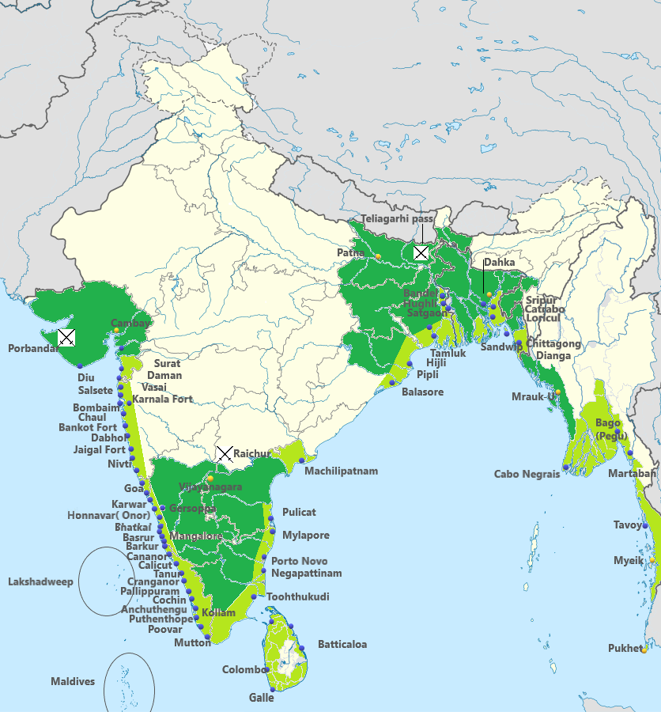
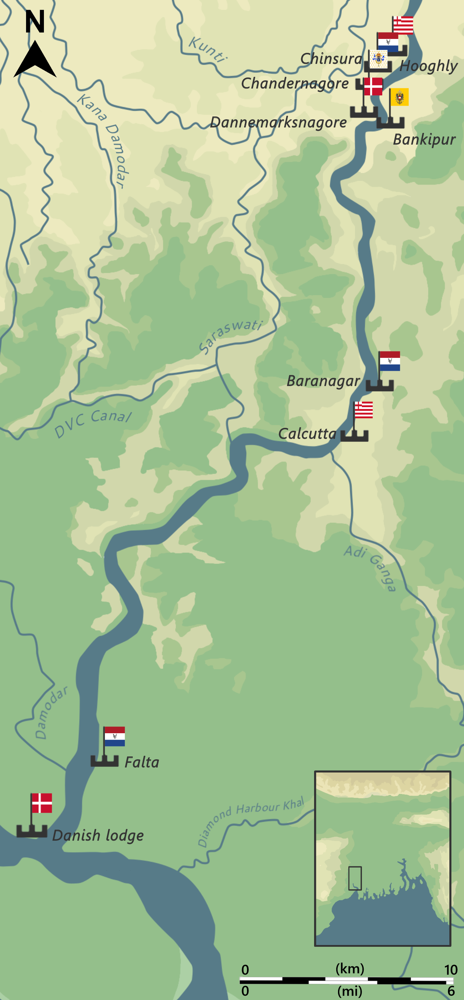

🗺️ European Trade Routes & Factory Locations — Master Detail
Map-based analysis, factory locations, exam-focused predictions, and Bihar-specific deep dive
🗺️ Map 1 — Vasco da Gama's Sea Route (1498)
The most important map for this topic: Vasco da Gama's voyage from Lisbon, around the Cape of Good Hope, to Calicut on the Malabar Coast. BPSC can frame this as "which route did da Gama take?" or "which cape did he round?"
Vasco da Gama's route: Lisbon → Cape of Good Hope (Africa) → East Africa (Mozambique, Mombasa) → Calicut (May 1498). Note he was helped by an Indian navigator from Gujarat, Kanji, and an Arab navigator, Ibn Majid.
Departure: Lisbon, Portugal (July 1497)
Cape of Good Hope: rounded in November 1497 (the critical waypoint — separates Atlantic from Indian Ocean)
East African stops: Mozambique, Mombasa, Malindi (where he hired the Indian navigator Kanji)
Arrival: Calicut (Kozhikode), Malabar Coast — May 1498 (23-day crossing of the Arabian Sea)
Reception: received by the Zamorin (Hindu ruler of Calicut); trade was initially welcomed but tensions arose over Portuguese goods being inferior to Arab trade goods
72nd PredictionHigh probability: "Vasco da Gama reached Calicut via which route?" → Cape of Good Hope. Medium probability: "Who helped da Gama navigate from East Africa to India?" → Indian navigator from Gujarat (Kanji) / Arab navigator (Ibn Majid). BPSC has not asked this yet but it appears in NCERT.
🗺️ Map 2 — Portuguese Settlements in India
The Portuguese had a chain of settlements along the western and eastern coasts. Their HQ was Goa (captured 1510 from Bijapur). Note how they controlled key ports but never held large inland territories — the "Blue Water Policy" in action.

Portuguese settlements: Goa (HQ, 1510), Daman, Diu, Dadra & Nagar Haveli (all on the west coast); Cochin, Calicut, Nagapattinam, São Tomé (Chennai) on the east coast. These remained Portuguese until 1954–1961.
Portuguese Settlement
Coast
Year
Significance
Calicut
West (Malabar)
1498 (arrival)
First European landing point
Cochin
West (Malabar)
1503 (factory)
Commercial HQ before Goa
Goa
West (Konkan)
1510 (captured)
Political HQ; "Rome of the East"
Daman
West (Gujarat)
1559
Northern outpost; remained until 1961
Diu
West (Kathiawar)
1535
Island fortress; remained until 1961
Dadra & Nagar Haveli
West (Gujarat interior)
1779
Liberated in 1954 (before Goa)
São Tomé (Chennai)
East (Coromandel)
1522–1530
Lost to Golconda in 1662
Hugli (Bengal)
East (Bengal)
1537
Lost to Shah Jahan in 1632
🗺️ Map 3 — All European Factories in India (Inline Map)
An at-a-glance visual of where each European power established its factories. Note the geographic clustering: Portuguese on the west coast, English on all three coasts, Dutch on the Coromandel and in Bihar, French on the Coromandel and Bengal.
European Trading Posts in India (17th–18th Century)
Portuguese
Dutch
English
French
Danish
★ = Headquarters
72nd PredictionMatching question likely: "Match the European power with its headquarters in India." The traps: Dutch HQ = Pulicat (not Cochin, which was secondary); French HQ = Pondicherry (not Chandernagore, which was a Bengal subordinate post); English first factory = Surat (not Madras, which came in 1639).
🗺️ Map 4 — European Factories on the Hooghly River (Bengal, 18th Century)
The Hooghly River (a distributary of the Ganga) in Bengal was lined with European factories — all five powers had posts within 40 km of each other. This concentration is the physical evidence of Bengal's commercial importance.

European factories on the Hooghly River (18th century): English (Fort William/Calcutta), French (Chandernagore), Dutch (Chinsurah), Danish (Serampore), Portuguese (Hugli). All within 40 km of each other — a remarkable concentration of European rivalry.
Factory
Power
Year
Location on Hooghly
Fort William / Calcutta
English
1690
Southernmost; became Bengal's capital
Chandernagore
French
1673
~35 km north of Calcutta
Chinsurah
Dutch
1625
~40 km north of Calcutta
Serampore
Danish
1755
~25 km north of Calcutta; later the Serampore Mission
Hugli
Portuguese
1537
Northernmost; lost to Shah Jahan in 1632
🧠 Mnemonic — Hooghly Chain "South to North: E-F-D-D-P" English (Calcutta, 1690) → French (Chandernagore, 1673) → Danish (Serampore, 1755) → Dutch (Chinsurah, 1625) → Portuguese (Hugli, 1537). All five European powers in a 40-km stretch of one river!
📊 Comparative Analysis — European Powers Side-by-Side
Attribute
Portuguese
Dutch
English
French
Danish
Arrival
1498
1595
1608
1668
1620
Company formed
— (royal monopoly)
1602 (VOC)
1600 (EIC)
1664 (state)
1616
HQ in India
Goa (1510)
Pulicat (1610)
Surat→Madras (1639)
Pondicherry (1674)
Tranquebar (1620)
Main trade goods
Pepper, spices
Spices, textiles, indigo
Textiles, silk, saltpetre, opium
Textiles, spices
Textiles, pepper
Military strategy
Blue Water Policy (naval)
Trade-focused
Trade→Empire (post-1757)
Policy of Imperialism (Dupleix)
Minimal military
Relation with Mughals
Tense (naval dominance)
Cooperative
Diplomatic (Roe 1615)
Cooperative then rival
Minimal
Left India
1961 (last)
1825
1947
1954
1845 (sold)
Key figure
Albuquerque
de Houtman
Sir Thomas Roe
Dupleix
William Carey (mission)
Bihar presence
None
Patna (1632)
Patna (post-1765)
None
None
🔶 Bihar Deep Dive — Dutch & English in Bihar
Bihar's strategic value for European traders: Bihar's Gangetic plains produced three commodities that European powers competed for:
Saltpetre (potassium nitrate): the key ingredient in gunpowder — essential for European military supremacy. Bihar's alluvial soil (especially around Patna, Gaya, and Munger) naturally produced saltpetre through nitre deposits. Before the 19th century, Bihar was the world's primary source of saltpetre.
Opium: Bihar's climate was ideal for poppy cultivation. After the EIC gained Diwani of Bengal (1765, which included Bihar), the Company established a monopoly on opium production and created the Patna Opium Factory (1780) — the largest opium-processing facility in the world. Opium was exported to China, generating enormous revenue that funded the Company's wars and administration.
Indigo: natural blue dye extracted from the indigo plant, grown extensively in Bihar. The Dutch and English both sourced indigo from Bihar's factories.
Bihar Factory
Power
Year
Trade Goods
Significance
Patna
Dutch
1632
Saltpetre, indigo, opium
69th BPSC PYQ — the Dutch were first in Bihar
Rajmahal
Dutch
~1630s
Saltpetre, textiles
Near the Bihar-Bengal border on the Ganga
Patna
English
post-1765
Saltpetre, opium
After Diwani, EIC took over Dutch factories
Munger
English
post-1765
Saltpetre
Strategic fort on the Ganga
Patna Opium Factory
English EIC
1780
Opium processing
World's largest opium facility; exported to China
69th PYQ"The Dutch East India Company established its factory at Patna in which year?" → Answer: 1632. This is the highest-yield Bihar-specific PYQ for this topic. Know the year and the trade goods (saltpetre, indigo, opium).
72nd PredictionHigh probability Bihar question: "Which commodity was Bihar most known for in European trade?" → Saltpetre (for gunpowder). Medium probability: "The Patna Opium Factory was established in which year?" → 1780. Low probability but possible: "Which European power had a factory at Patna before the English?" → Dutch (1632).
🎯 Exam-Focused Predictions for 72nd BPSC
PREDICTION 1Date-based question (high probability): Vasco da Gama → 1498, Dutch VOC → 1602, English EIC → 1600, French Company → 1664. The most common format: "Which European power arrived in India first?" → Portuguese (1498). Trap: English EIC (1600) was chartered before Dutch VOC (1602), but the Dutch reached India first (1595).
PREDICTION 2Matching question (high probability): "Match the European power with its headquarters: Portuguese-Goa, Dutch-Pulicat, English-Surat/Madras, French-Pondicherry." The traps: (a) Dutch HQ = Pulicat (NOT Cochin); (b) French HQ = Pondicherry (NOT Chandernagore); (c) English first factory = Surat (NOT Madras, which came in 1639).
PREDICTION 3Chronological ordering (medium probability): "Arrange in chronological order: 1. Arrival of Portuguese 2. Formation of English EIC 3. Battle of Swally 4. Capture of Pondicherry." Answer: 1 (1498) → 2 (1600) → 3 (1612) → 4 (1674). The 69th BPSC asked a similar chronological ordering question.
PREDICTION 4"Not correctly matched" (medium probability): BPSC loves this format. Likely traps: (a) Dutch — Battle of Swally (WRONG: Swally was English vs Portuguese); (b) Portuguese — Policy of Imperialism (WRONG: that was the French under Dupleix); (c) English — Blue Water Policy (WRONG: that was the Portuguese under Albuquerque).
PREDICTION 5Bihar-specific question (high probability given 71st trend): "The Dutch East India Company established its factory at Patna in which year?" → 1632 (69th PYQ, likely to be repeated with a twist). Or: "Which commodity made Bihar strategically important for European traders?" → Saltpetre (for gunpowder). Or: "Which European power traded from Bihar before the English?" → Dutch.
PREDICTION 6"First to come, last to leave" (medium probability): "Which European power was the first to arrive and the last to leave India?" → Portuguese (arrived 1498, left 1961 when India liberated Goa). This is a classic one-liner that BPSC has not yet asked but is exam-ready.
PREDICTION 7Statement-based question (low-medium probability): "Consider the following statements: 1. The English EIC was chartered before the Dutch VOC. 2. The Dutch reached India before the English. 3. The Portuguese were the first to arrive and the last to leave." All three are correct. The trap is statement 1 — the English EIC (1600) predates the Dutch VOC (1602), but students often assume the Dutch company came first because the Dutch reached India first (1595).
📊 PYQ Frequency Analysis — Modern History (69th–71st)
Exam
Total History PYQs
Relevant to Topic 24
Key Questions
69th BPSC
~15
3–4
Dutch Patna 1632; chronological order (Home Rule/Minto-Morley/Kheda); Treaty of Allahabad after Buxar; INC founding
70th BPSC (Jan)
~12
2–3
Macaulay's minute 1835; AITUC formation 1920; Gaya Session 1922; 1857 as First War
70th BPSC (Dec)
~10
2–3
"Do or Die" slogan; Patna Session of INC; Quit India parallel governments; INA provisional government
71st BPSC
~12
3–4
Champaran Agrarian Committee; Home Rule League visit to Bihar; INA command; Censure Motion; newspaper-editor matching
Total modern history PYQs: ~46 across 69th–71st (from pyq_analysis_summary.md)
Directly relevant to Topic 24 (Advent of Europeans): ~8–10 PYQs — mostly dates, matching, and Bihar-specific (Dutch Patna)
Question pattern trend: BPSC is shifting from pure date-recall to "which is NOT correctly matched" and chronological ordering — a more analytical format that tests deeper understanding
Bihar emphasis (71st trend): the 71st was "more Bihar-specific than national" — expect at least one Bihar-related history question (Dutch Patna, Champaran, Kunwar Singh, or Quit India in Bihar)
EXAM STRATEGY For Topic 24, memorise: (1) the arrival order P-D-E-F, (2) the headquarters G-P-M-P-T, (3) the dates 1498/1600/1602/1664, (4) the Bihar-specific facts (Dutch Patna 1632, saltpetre, Patna Opium Factory 1780), and (5) the "first to come, last to leave" Portuguese paradox. These five bundles cover ~90% of probable questions from this topic.